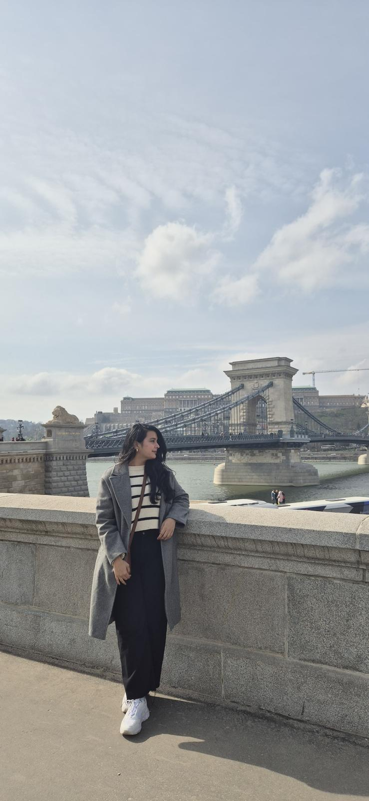

From Karachi to Bologna to Zurich — I study how the brain tells the body to move, and what happens when that conversation breaks down. Specialising in neurorehabilitation and gait biomechanics.

It started in Karachi — a city that is loud, chaotic, and deeply human. Growing up there gave me a particular fascination with people: how they move, how they think, how they adapt. When I decided to study Biomedical Engineering, I wasn't entirely sure where it would take me. I just knew I wanted to work at the intersection of science and the human body.
In 2022, I packed up and moved to Bologna, Italy to pursue my MSc at one of the oldest universities in the world. What I found there was a community of researchers obsessed with questions I'd never thought to ask — about how the nervous system encodes movement, how injury rewrites the brain's map, how rehabilitation can rebuild what disease or trauma takes away. I found my focus: neurorehabilitation.
The final chapter of my degree took me to Zurich, where I spent six months at ETH's Institute for Biomechanics conducting thesis research with Parkinson's patients. Watching how a neurodegenerative condition quietly reshapes the most ordinary actions — the way someone steps over a curb, the hesitation before crossing a threshold — made the abstract concrete. I graduated in November 2025, and I haven't stopped thinking about those questions since.
Beyond the lab, I'm deeply interested in visual perception and cognitive bias — how the brain constructs reality, updates beliefs, and learns through sensorimotor experience. The more I study movement, the more I see how much of it is mental.
My thesis question was deceptively simple: how do people adjust their gait when stepping over an obstacle? The answer, it turns out, is profoundly different depending on whether you're 25, 65, or living with Parkinson's disease.
Over six months in Zurich, I worked with 20 participants — 5 of them Parkinson's patients — across 100+ individual trials. Each session meant careful preparation: participant briefings, motion capture setup, protocol adherence in a clinical environment that had very little tolerance for error. We were working directly with USZ Neurology Clinic and RELab, which meant the standards were high and the stakes felt real.
What emerged from all that data was striking: maximum heel clearance — how high someone lifts their foot when crossing an obstacle — turned out to be a meaningful discriminator of fall risk in neurological populations. It sounds small, but fall risk is one of the most consequential quality-of-life factors for people with Parkinson's. Finding a reliable, measurable indicator felt like something that could actually matter.
Before Europe, there was Karachi. My first research experience was at NCAI, on a government-funded initiative to build a diagnostic tool for ADHD using EEG signals. It was ambitious — and honestly, a little overwhelming for someone just finding their footing in the field.
I ran acquisition sessions with 11 participants, including children with ADHD diagnoses, managing everything from electrode headset preparation to making participants feel comfortable enough to sit still for an EEG session (harder than it sounds). The technical work involved maintaining data quality across a dual-device setup: artifact rejection, bandpass filtering, spectral feature extraction. The goal was to detect ADHD-specific EEG signatures at a scale that could eventually reach clinical settings across Pakistan.
It was my first experience of research as something collaborative, human, and imperfect — a far cry from textbooks. I came away with a deep respect for the gap between a good idea and a working tool, and a lot of questions I'm still chasing.
Post-Stroke Patient Monitoring Device
What does a stroke survivor actually need once they leave the hospital? Our team decided to ask rather than assume. We went to Bufalini Hospital in Italy, sat with clinicians, and ran a proper clinical needs assessment in the post-stroke care unit. That grounding shaped everything — the device we prototyped using the Stanford Biodesign Process, the risk management documentation we built to ISO 14971, and the EU MDR compliance framework we developed around it.
CoLab 2024, ETH Zurich Entrepreneur Club
For a few months at ETH Zurich, I stepped out of the lab and into a startup. As part of CoLab 2024, our team was building Labli Automation — an optogenetic cell culture company. I led the business plan, ran industry validation interviews, and eventually pitched our go-to-market strategy to a room of experts. A very different kind of problem-solving from gait analysis, but the same fundamental skill: translating a complex idea into something someone else can believe in.
Worked on installation, calibration, and maintenance of clinical equipment — X-ray machines, ultrasound scanners — while learning what quality control looks like on the ground in a medical setting.
Joined the ETH entrepreneurship programme and built a startup from idea to pitch. Led business planning for Labli Automation, an optogenetic cell culture venture — validating with industry and presenting to experts.
Led the PR strategy for the Gender Dialogues campaign — built a student ambassadorship programme from scratch, recruited representatives, and coordinated outreach across universities.